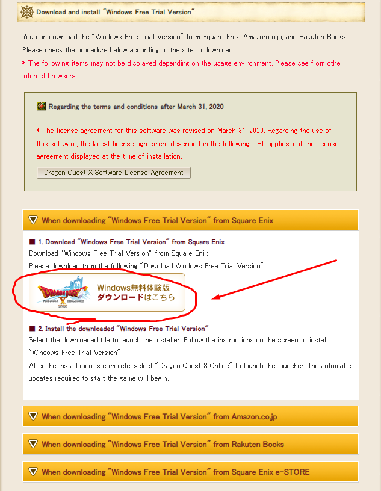
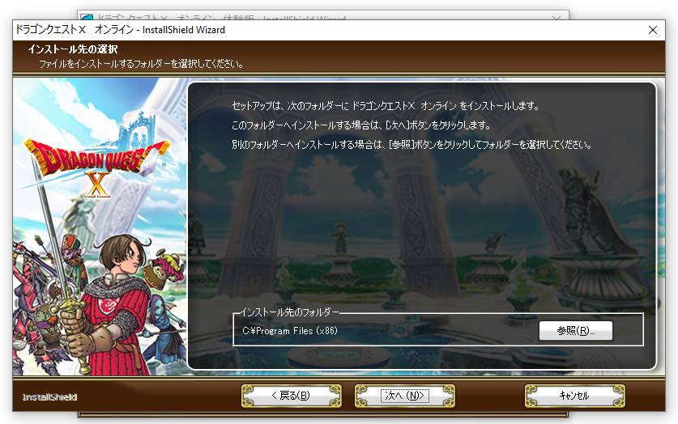

These pages are designed to take you step-by-step through the process of getting the game set up from scratch. Each page will list steps in order you should complete them in, including an optional VPN setup guide if you live outside of the United States or Japan. As of right now, this guide only covers the PC version of the game. This will be updated later with information pertaining to other versions of the game as well, however steps remain largely the same regardless of which version you play on.
Information is subject to change as the game and the sites become updated. Huge thanks to renaudabaj on GitHub for his original guide, where a lot of this information is sourced from.
Step 1. Setting Up a (Japanese) Square-Enix Account
Making a Japanese Square Enix will be the first thing you have to do as a new user regardless of which version of the game or platform you decide to play. Please make sure to follow the steps carefully to ensure you successfully create a Japanese Square Enix Account.
However, if you already have a Japanese Square Enix account, you may skip to the next step.
To start, navigate to the Japanese Square Enix Login Page.

You'll want to click on the big blue register button near the bottom of the page here, it'll bring you to the account registration page.
On this page you'll have to select "Japan" under the "Country" setting and wait for the page to reload.
Enter your information according to the image above. If you already have a non-Japanese Square Enix account, note that this account must be unique, meaning it must use a different email and User ID.
Once you complete filling out the information, complete the captcha and hit the orange button below.
You'll be redirected to the following page shown below, where you'll be asked to enter a verification code sent to the email you used to create the account.

Once you've entered the verification code, click the orange button to proceed.

Click the orange button once again and your account setup will be complete.
Step 2. Activating the Windows Free Trial
Please make sure to follow the next steps carefully. A lot of new users get tripped up activating their trial.
First, click this link. It'll bring you to the page below. Scroll down until you see the indicated buton.
It will bring you to the following page. Click the large blue button on top.

You'll be prompted to log in, do so, and hit the orange button on the following two pages shown below. This will register the game on your account, so you'll be able to play the trial after installing the client.
Step 3. Downloading and Installing the Client
To download and install the client, the first thing you'll need to do is click this link to head back to the page we were on earlier. This time, scroll down until you see the yellow drop-down box seen below, and expand it so you can access the download button indicated in the following image:
This will begin downloading the installer for the client. If your browser marks the file as dangerous or your firewall blocks the download, disregard these warnings. After the download has completed, run the file and you'll be greeted with the installer:

Follow through the installer by hitting the button indicated with a "(N) >" on the bottom right. The other button will cancel the install process. You'll be led through multiple screens. You'll be able to change the install directory later. For now just continue through until you're met with this screen:
Same deal here, we're going to proceed through this secondary installer using the same button as before.
This screen will allow you to change your install directory. Do so now if you're inclined, as this will be your last chance without moving crucial game files (unstable). After selecting an install directory, continue to proceed through this installer.
At this point you'll be asked if you would like to create a desktop shortcut. Checking this box will create one for you. Afterwards, continue by hitting the same button.
You'll have to proceed through one more installer which is much of the same, after which you'll be met with the following screen indicating the completion of the client installation.
Congratulations, you've now installed the Dragon Quest X client, however, the game itself is yet to be installed in the next step. The installer you just ran contains necessary files for the launcher client to run, however game files will be pulled from the server after you launch this client.
Step 4. Initializing Client and Config
There are still a couple more crucial steps before you're able to play the game. You will not be able to play the game correctly without following these steps, as your account will have to be registered to the client itself. This portion of the guide will also go over the config client.
The first time you launch the client you'll be prompted with the following screen to wait while the game downloads and patches.
THIS WILL TAKE A WHILE. The average install time is 200-400 minutes. Your connection will be throttled.
Once this download completes you'll be met with the screen below. This is as far as non-US players will be able to go without setting up an appropriate VPN service. Please skip to that part of the guide now if you're not playing from the US or Japan.

This is the main screen of the client. You might be tempted to log in immediately to start playing. Don't.
The first thing you're going to want to do is click on the button indicated in the image below:
Which will bring you to the following screen:
Ignore Step 1. This is registration, which by this point you should have already done. Instead, if you're ready to play (without looking at the config portion of this guide), go ahead and log in with your Japanese Square Enix Account credentials. This will register your account to the client.
If you've done everything correctly up to this point, you should see a player profile like the one listed above. When you create a character in-game, their name should fill the brackets, signifying it's your account. Congratulations, at this point you're ready to play the game.
For configuration settings, please reference the following page from our friends at the Ethene Wiki: Configuring Dragon Quest X Settings
Step 5. VPN Setup Guide (Non US only)
(This is under construction, in the meantime:)
VPNs: You only need a VPN if you do not live in Japan or the USA.
FREE: ProtonVPN: https://protonvpn.com
SoftEther VPN: https://www.softether.org/
VPN Gate: https://www.vpngate.net/en/download.aspx